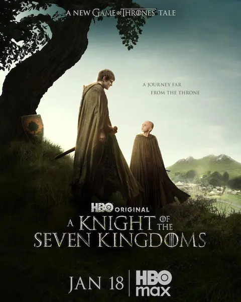

HBO ha confirmado la renovación de 'A Knight of the Seven Kingdoms: The Hedge Knight' por una segunda temporada, ampliando asà el universo de Juego de Tronos más allá de House of the Dragon. La cadena anunció además un plan de expansión del universo de George R. R. Martin con nuevas temporadas programadas hasta 2028.
La serie, que adapta las novelas de Dunk y Egg ambientadas unos 90 años antes de los eventos de Game of Thrones, siguió a Ser Duncan el Alto y al joven prÃncipe Aegon Targaryen en sus aventuras como caballero errante por los Siete Reinos. Su tono más ligero y aventurero, alejado de la oscuridad polÃtica de las demás precuelas, la distinguió desde su estreno.
El anuncio llega mientras House of the Dragon prepara su tercera temporada para junio de 2026, consolidando la estrategia de HBO de mantener el universo de Poniente en pantalla de forma continua con producciones solapadas en el tiempo.
Para los fans de los libros, la renovación supone una buena noticia: las novelas cortas de Dunk y Egg son de las pocas historias del universo ASOIAF que GRRM ha completado, por lo que la serie tiene material de sobra para continuar sin los problemas de la adaptación de los libros principales de Canción de Hielo y Fuego.